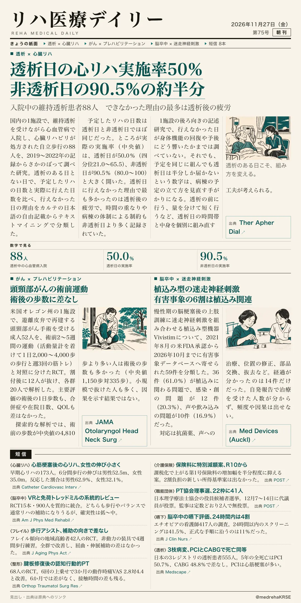
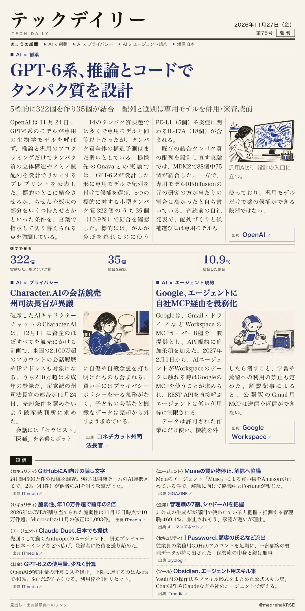

リハ医療デイリー
透析日の心リハ実施率50％ 非透析日の90.5％の約半分
入院中の維持透析患者88人 できなかった理由の最多は透析後の疲労

テックデイリー
GPT-6系、推論とコードでタンパク質を設計
5標的に322個を作り35個が結合 配列と選別は専用モデルを併用・※査読前

入院中の維持透析患者88人 できなかった理由の最多は透析後の疲労

5標的に322個を作り35個が結合 配列と選別は専用モデルを併用・※査読前
